O que mudou no servidor¶
Lista de tudo que é diferente do Ragnarok que você conhece, por classe. Habilidade sem mudança não aparece aqui. As classes estão na ordem da árvore. O que ainda não chegou ao servidor está em Em breve; as datas de cada versão estão nas novidades.
Cada habilidade alterada tem uma página com como era → como ficou, os números e como aprender, e um link para a habilidade original no bROwiki.
Maestrias que sobem jogando (todas as classes de 2ª). Cada classe tem uma maestria própria de 20 níveis: matar monstros do jeito certo dá pontos (até 1.000 por dia) e cada nível dá uma vantagem pequena e permanente. Digite o comando da sua classe no jogo para ver o nível e quanto falta. Cada seção abaixo diz qual é.
Cavaleiro¶
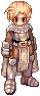
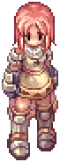
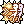
Impacto de Tyr — sempre 3 golpes de 500%, sem empurrar o alvo.- Perfurar — 2, 3 ou 4 golpes, conforme o tamanho do alvo.
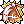
Brandir — 500% em toda a área. Bumerangue — 400% no nível 5. - Estocada —
(100 + 40 × nível)%. - Lança de duas mãos — Perfurar, Estocada, Brandir e Bumerangue batem 25% mais forte com ela.
- Matador de Dragões (
@dragao) — matar Dragões sobe a maestria: no nível 20, você causa +20% e recebe 20% menos de dano de Dragões. Quatro troféus extras reforçam o efeito. NPC: o Caçador de Dragões.
Templário¶
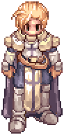
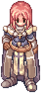
- Crux Divinum — 500% no nível 10 e alcance 5; com lança de duas mãos, ×1,5 (750%).
- Crux Magnum — as cartas de dano valem e o dano não é dividido. O dano que o próprio Templário leva dele cai para 12,5% do original (sem nunca baixar de 25% do seu HP). Troféus e nível da Cruzada não aumentam esse dano em você.
- Cruzada (
@cruzada) — abates e troféus dão bônus de até ~20% de dano nas duas habilidades. NPC: o Inquisidor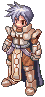
(castelo de Prontera, 113,51).
Bruxo¶
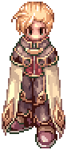
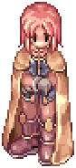
- Coluna de Pedra — mais dano (no nível 5, 5 golpes de 130% da magia).
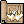
Fúria da Terra — área 7×7, mais dano. Esfera d'Água — funciona fora da
água com Garrafa de Água.
Esfera d'Água — funciona fora da
água com Garrafa de Água.- Encher Garrafa — habilidade nova, de quest.
- Sentido Sobrenatural — vira um bônus de +10% de dano contra o elemento do monstro lido, por 60 s.
- Ganbantein — o Bruxo aprende por quest.
- Espírito do Bruxo — dá a Amplificação Mística nível 10 por 30 s.
- Maestria Elemental — sistema novo: o Bruxo melhora nos elementos que usa para caçar.
Sábio¶
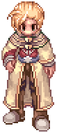
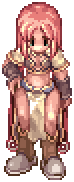
Visão geral: Sábio artesão e Desejo Arcano.
- Desejo Arcano — sem o Espírito: a Lança sai no nível do Desejo Arcano, sem sorteio de nível.
 Fabricar Varinha ·
Fabricar Varinha ·
 Fabricar Cajado ·
Fabricar Livro — habilidades
novas, de quest.
Fabricar Cajado ·
Fabricar Livro — habilidades
novas, de quest.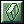
Estudo de Livros — o alcance com livro sobe com lições semanais, até 5.- Coluna de Pedra e Fúria da Terra — as mesmas mudanças do Bruxo (estão na árvore das duas classes).
- Sentido Sobrenatural — dá bônus contra o elemento do monstro lido.
Caçador¶
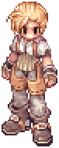
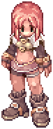
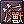
Ataque da Fera — sem o Espírito, pela árvore; Bruto, Inseto, Planta e Amorfo.- Inimigo das Feras — vale contra as mesmas quatro raças.
 Fabricar Arco — habilidade nova:
8 arcos assinados.
Fabricar Arco — habilidade nova:
8 arcos assinados. Ataque Aéreo — o automático sai com
0,5% por SOR, no nível aprendido, e não divide o dano na área.
Ataque Aéreo — o automático sai com
0,5% por SOR, no nível aprendido, e não divide o dano na área.- Falcão — o dano vem da AGI e da SOR (a DES e a INT saem da conta), com 30% a menos no golpe base. As armadilhas crescem mais com a INT.
- Aves — escolha a ave do ombro: Águia-Real (às vezes ataca junto da Rajada de Flechas e do Ataque das Feras), Falcão-Peregrino (depois do Ataque Aéreo automático, ataca mais rápido por 3 s) ou Coruja (armadilhas às vezes rearmam ou não gastam).
- Treino do falcão e da Rajada — matar com a Rajada de Flechas devolve
parte do SP gasto nela (até 90%). Com
@falcaoe@rajadavocê vê o nível do treino, os abates e o que falta (a Mestra das Aves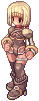
continua onde sempre esteve).
Bardo e Odalisca¶
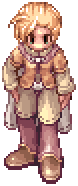
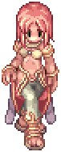
- Músicas e danças — viram bônus de grupo: quem está a até 15 células ganha o efeito por 2 minutos.
- Duetos — a dois, ou sozinho com a Caixa de Som no chão.
- Flecha Melódica e Estilingue — 150% por golpe, com tantos golpes quanto o nível.
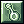
Lições de Música — +5 de ATQ por nível com instrumento ou chicote (era +3).- Repertório (
@repertorio) — a Plateia e a Flecha afinada pontuam a maestria do Bardo.
Sacerdote¶
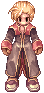
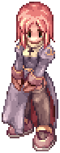
- Foco da Prece — escolha entre abençoar o grupo ou um alvo; no modo grupo, Bênção, Agilidade e Impositio valem para você e o grupo a até 15 células, sem alvo.
- Proteção Divina e Flagelo do Mal (também do Noviço) — crescem com o nível de base.
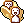
Suffragium — funciona sem alvo.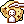
Impositio Manus — usa o ATQ mágico.- Perícia com Maça — +2 de crítico por nível com maça (era +1).
- Espírito do Sacerdote — o Magnus Exorcismus dá +20% de dano.
- Graça (
@graca) — curar outros jogadores sobe a maestria: no nível 20, Curar e Santuário curam ~20% a mais em outra pessoa. NPC: a Irmã da Graça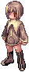
.
Monge¶
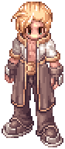
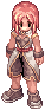
- Esferas Condensadas — item novo que guarda esferas; a reserva cresce por nível.
- Combo Triplo — chance de 30% em todos os níveis. Combo Triplo, Quádruplo e Último Dragão dão +30% sempre, sem precisar do Espírito do Monge.
- Disciplina (
@disciplina) — abater com combos pontua; no nível 20, o Último Dragão sai sem gastar esfera contra monstros. NPC da Disciplina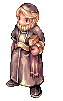
.
Ferreiro¶
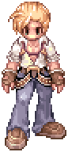
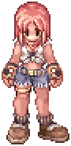
Visão geral: forja do Ferreiro.
- Forjas, cada uma com uma arma nova e as Marcas de Caça:
Adaga ·
Espada ·
Espada de Duas Mãos ·
Machado ·
Maça ·
 Soqueira ·
Lança
Soqueira ·
Lança  Forjar Katar — habilidade nova,
de quest (Jur, Katar, Jamadhar).
Forjar Katar — habilidade nova,
de quest (Jur, Katar, Jamadhar).- Ferro · Aço · Pedra Encantada · Pesquisa de Oridecon — 3 níveis em vez de 5 (o mesmo efeito no máximo; a Pesquisa de Oridecon passa a funcionar).
- Adrenalina Pura — qualquer arma menos arco no próprio Ferreiro; dura mais.
- Força Violenta — não quebra mais a arma; dura mais.
- Manejo Perfeito e Adrenalina Total — duram mais.
- Perícia em Armamento — dá também crítico.
- Resistência ao Fogo — mais resistência a Neutro.
Mercador e Alquimista¶
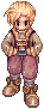
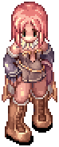
- Mercador e Alquimista — lote 2
- Plantas do Alquimista · Ingredientes dos frascos
- Esferas do Alquimista
- Caixa do Alquimista
- Homúnculos
Mercenário¶
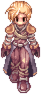
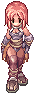
- Lâminas Destruidoras — 1.000% no nível 10, mas com 1,5 s de pausa depois (0,75 s com o Espírito do Assassino).
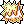
Tocaia — com o Espírito do Assassino, dano dobrado (nível 5: 300% → 600%); em Guerra do Emperium, só +25%.- Contratos da Guilda (
@contrato) — cumprir contratos sobe a maestria: no nível 20, crítico de katar e das Lâminas +10%. NPC: o Agenciador (Morroc,in_moc_16149,84).
Arruaceiro¶
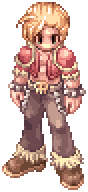
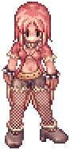
- Apunhalar — teleporta às costas do alvo e golpeia 2 vezes:
(100 + 40 × nível)%por golpe (500% por golpe no nível 10, 1.000% no total). Contra jogador, −15%. Funciona com arco, pela metade. - Mão Leve (
@maoleve) — furtar (Furto, Saque, Afanar) sobe a maestria; no nível alto, mais força e mais zeny nos furtos. NPC: o Receptador (in_rogue364,46).
Ninja¶
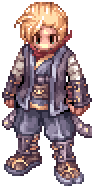
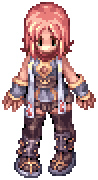
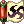
Shuriken Huuma — 1.350% em cada alvo da área (o dano não se divide), 3 s de conjuração.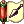
Kunai — 3 golpes de 200% (600%).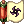
Arremessar Shuriken —(200 + 5 × nível)%(250% no nível 10).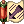
Prática de Shuriken — +10 de ATQ por nível (+100 no 10) nos três arremessos: por golpe na Shuriken e na Kunai, por alvo na Huuma.- Arremessos pela DES — Huuma, Kunai e Arremessar Shuriken usam a DES como atributo principal.
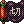
Corte das Sombras — sem precisar do Esconderijo;160 × nível%(800% no nível 5).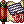
Corte da Névoa — libera o Salto das Sombras por 10 s, sem Esconderijo.- Duas adagas — o Ninja usa duas; as cartas de dano da mão esquerda valem em todas as habilidades. No ataque comum, direita 100% e esquerda 80%.
- Economia (
@economia) — poupa pedras e munição. NPC: o Mestre das Pedras (que_ng27,65).
Justiceiro¶
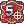
Disparo Espalhado — 800% em área no nível 10 (a DEF do alvo conta). Mina — 225% no nível 5.- Aumentar Precisão, Resistência Final e Pânico — podem ficar ligados juntos; o Aumentar Precisão dura 300 s.
- Maestria por arma (
@maestriaarma) — cada arma de fogo tem a sua maestria; no nível 20, +20% de dano à distância e +20 de HIT, só com aquela arma. NPC: o Armeiro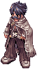
(que_ng183,156).
Taekwon¶
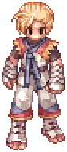
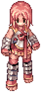
- Postura (
@postura) — abater com os chutes de postura pontua; cada nível soma +1 ponto percentual à chance de abrir a janela do chute (de 15% a 35%; Contrachute de 20% a 40%). NPC: o Mestre do Dojo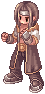
(Payon 160,141).
Mestre Taekwon¶
- Pacto (
@pacto) — abates do Ódio no mapa do Sentimento pontuam; +1% por nível de dano contra o Ódio e nas Proteções Solar e Lunar. Refazer o Sentimento e o Ódio só é possível a cada 7 dias. NPC: o Guia das Estrelas (Payon 212,102).
Espiritualista¶
- Esma — exige o buff do Eske, e cada buff dá 5 usos em sequência (o 6º falha); o buff dura 15 s.
- Estin —
(10 + 20 × nível)%em todos os tamanhos (era só contra pequenos). - Espíritos (
@espiritos) — entregar Espírito a outro jogador (de outra conta) pontua a maestria; os Espíritos duram +2% por nível. NPC: o Mestre dos Espíritos (Payon 157,150).
Super Aprendiz¶
- Sem morrer (
@semmorrer) — abates sem morrer pontuam (o 100º em diante vale dobro); morrer zera a sequência, mas os pontos ficam. HP e SP máximos +1% por nível (+20% no 20). - Continuam valendo: +10 em todos os atributos para quem nunca morreu (classe nível 70+) e +2.000 de HP no nível 99.
Em breve¶
O que chegou na última versão está nas novidades. Em preparação, ainda dependendo do dono: os Distritos de todas as linhas e PvP, campos de batalha e arena.